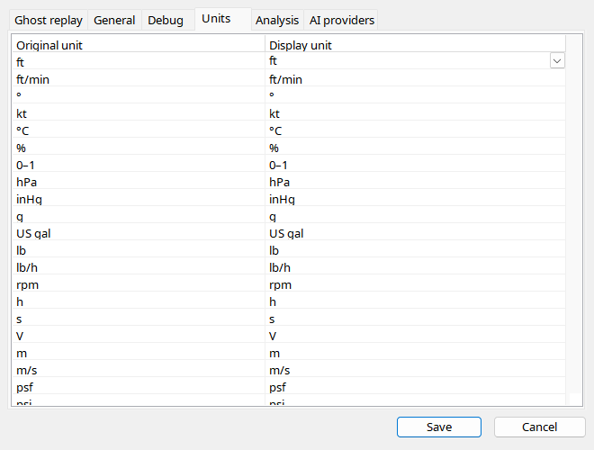

Select units per category, such as altitude, speed, temperature, mass or pressure. Check the displayed label afterwards; classical instruments may retain feet-based geometry while numeric text uses metres. Barometric, oil and hydraulic pressures are different quantities. Oil uses psi naturally. Switch-position labels are enums, not conversions: FLAPS 5 is a detent label, not necessarily degrees.
| Option / action | Behavior and limitations |
|---|---|
| Rows | Choose supported units per quantity. Inspector/charts update values and captions; unsupported conversions do not invent a unit. |
| Altitude / speed | Converted text is distinct from conventional aircraft tape/mechanism geometry. The recorded source remains unchanged. |
| Pressure / fuel | Distinguish oil pressure from barometric pressure, and quantity from flow. Oil gauges use psi. |
| Enums | Cockpit switch labels are mappings, not unit conversions; unknown values remain numeric. |
